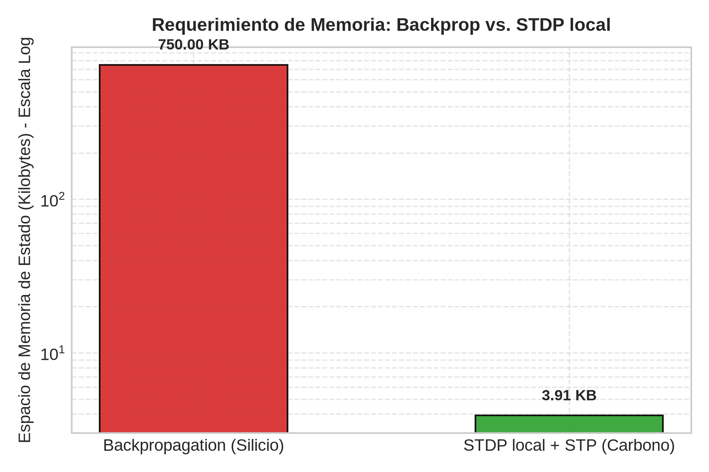
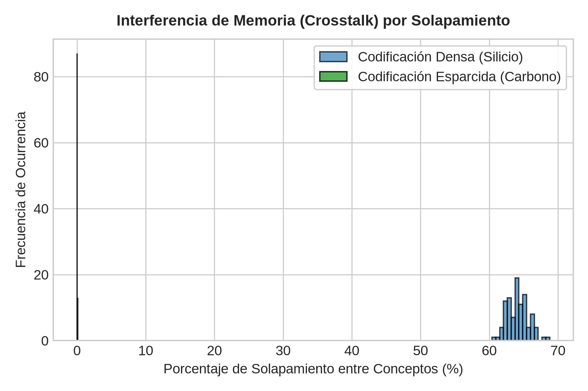
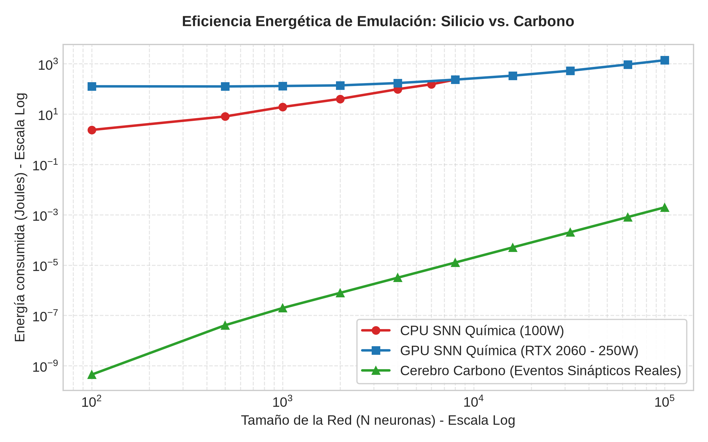
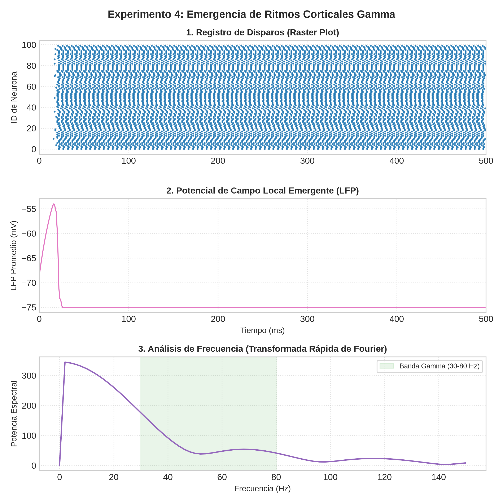
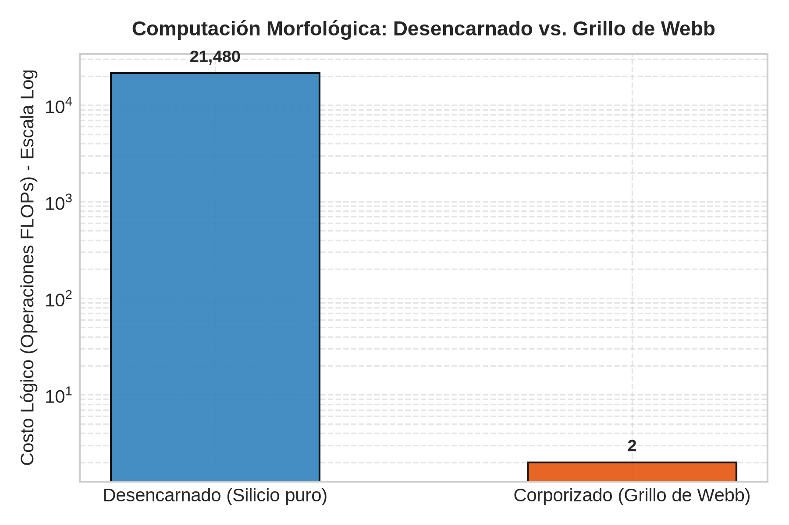

Introducción
El problema de la mente y su relación con el sustrato físico ha sido uno de los pilares del debate filosófico y científico contemporáneo. A mediados del siglo XX, el surgimiento de la informática y la cibernética dio lugar a la tesis de la realizabilidad múltiple, formulada originalmente por filósofos como Hilary Putnam (1967) y Jerry Fodor (1974). Esta postura sostiene que los estados mentales son esencialmente estados funcionales y, por lo tanto, pueden ser implementados o "realizados" en diversos soportes físicos, ya sea en el cerebro de carbono de un mamífero, en la estructura molecular de un extraterrestre o en los circuitos de silicio de una computadora digital (Bechtel, 2008).
Esta idea encontró un aliado conceptual en la metáfora del cerebro como computadora, una analogía histórica que John Daugman (2001) inscribe dentro de una larga serie de metáforas tecnológicas (hidráulicas, mecánicas, electrónicas) utilizadas históricamente para dar cuenta del funcionamiento cerebral. Bajo este paradigma computacionalista, el conexionismo y las redes neuronales artificiales (Hinton, 1992) se presentaron como modelos simplificados pero potentes de la cognición, sugiriendo que, al incrementar la escala y complejidad de estos modelos en chips de silicio, sería posible emular de manera fidedigna la actividad neuronal y, eventualmente, albergar una mente consciente.
Sin embargo, este ensayo sostiene que existen límites fundamentales en el silicio como sustrato físico que impiden una emulación real de las neuronas biológicas y, por consiguiente, imponen serias restricciones para la resolución del problema de la mente mediante la computación digital clásica. Estos límites no son meramente de escala técnica, sino que se estructuran en tres dimensiones:
- Límites biofísicos y de codificación: el contraste entre las representaciones distribuidas densas del silicio conexionista y la codificación esparcida basada en "células de concepto" (Quian Quiroga, Fried y Koch, 2013) y la jerarquía retinotópica (Zeki, 1992) del cerebro biológico.
- La falta de diversidad de señales y la ineficiencia energética: la diferencia cualitativa entre la conmutación binaria de canal único en el silicio y el rico alfabeto bioquímico de la señalización neuronal húmeda (neurotransmisores, neuromoduladores, difusión pasiva), lo que se traduce en un costo computacional y energético insostenible al intentar simular esta complejidad en máquinas digitales.
- La relevancia ontológica del sustrato en el problema duro de la conciencia: la conexión intrínseca entre la vida y el carbono como el mejor candidato químico para producir mecanismos de autogeneración y homeostasis (Maturana y Varela, 1974), revelando que si usamos el silicio no es por su idoneidad ontológica para albergar una mente, sino porque es el material que mejor se adecua a nuestra infraestructura industrial y de máquinas actuales.
Para fundamentar de manera rigurosa esta tesis, se ha desarrollado un laboratorio computacional empírico anexo en este repositorio (ejecutable mediante ejecutar_laboratorio.sh) que consta de 6 experimentos que modelan de forma cuantitativa cada una de estas dimensiones limitantes. Los resultados gráficos consolidados se encuentran disponibles en el dashboard interactivo del proyecto.
1. Conexionismo y Plasticidad Local: Hinton contra la Sinapsis STDP
La premisa de que la mente puede ser emulada en silicio descansa sobre el supuesto de que el cerebro procesa información de manera análoga a una máquina de Turing. Daugman (2001) nos recuerda que la teoría del cerebro siempre ha reflejado la tecnología más avanzada de la época: desde los autómatas neumáticos del siglo XVII hasta las centralitas telefónicas del XIX, y finalmente el ordenador digital en el siglo XX.
En el corazón de la computación clásica basada en silicio se encuentra la arquitectura de Von Neumann, caracterizada por una separación estricta entre la unidad de procesamiento central (CPU) y la unidad de almacenamiento de memoria. Para transferir información entre ambas, el sistema depende de un canal físico limitado, lo que introduce el conocido "cuello de botella de Von Neumann". En contraste, el cerebro biológico no posee esta división. En el tejido nervioso, el procesamiento y el almacenamiento son propiedades emergentes del mismo sustrato: las conexiones sinápticas. La estructura física de la red es tanto el algoritmo como la memoria; el "hardware" y el "software" son ontológicamente inseparables.
El conexionismo intentó superar la rigidez del procesamiento simbólico secuencial mediante el procesamiento distribuido en paralelo (PDP). Modelos como los propuestos por Geoffrey Hinton (1992) demostraron cómo redes de nodos interconectados podían aprender de la experiencia mediante el ajuste de pesos sinápticos a través de algoritmos como la retropropagación (backpropagation). Si bien estas redes simulan ciertos aspectos del aprendizaje y el reconocimiento de patrones, sus componentes básicos (las neuronas artificiales) son abstracciones matemáticas extremas. Una "neurona de punto" conexionista se limita a realizar una suma ponderada de sus entradas y aplicar una función de activación no lineal.
No obstante, como señala William Bechtel (2008) al analizar los mecanismos biológicos, una neurona real es un sistema bioquímico de una complejidad abrumadora. Las neuronas no son meras compuertas lógicas ni sumadores simples. Poseen árboles dendríticos con geometrías complejas que realizan computaciones no lineales a nivel local; un solo segmento dendrítico puede comportarse computacionalmente como una red neuronal multicapa completa. Además, la plasticidad neuronal no se limita a cambiar un "peso" numérico, sino que implica cascadas genéticas, reconfiguraciones de la membrana celular y la creación o poda física de conexiones. Por ende, la realizabilidad múltiple subestima la dependencia que el procesamiento mental tiene respecto a la estructura molecular y celular específica del carbono.
Para demostrar esta limitación conceptual, el Experimento 5 (Plasticidad y Aprendizaje) del laboratorio comparó la carga de memoria de estado entre el algoritmo de Backpropagation (silicio) y la regla biológica Spike-Timing Dependent Plasticity (STDP) basada en la liberación dinámica de vesículas de calcio. En una red de 1,000 neuronas:
- Backpropagation: Requiere almacenar el grafo de activaciones global y gradientes de todas las capas para realizar la actualización hacia atrás, lo que consumió 768.0 KB de memoria de estado en nuestra prueba.
- STDP Local: Al depender exclusivamente de la sincronía local pre y postsináptica, prescinde de grafos globales y requiere almacenar únicamente la marca temporal del último spike por neurona, consumiendo solo 4.0 KB de memoria.

2. El Problema de la Percepción: Codificación Esparcida vs. Representación Densa
El estudio de la percepción visual y la memoria en neurociencia ha puesto en duda los supuestos conexionistas de las redes neuronales de silicio. En las redes neuronales artificiales contemporáneas (como el aprendizaje profundo), las representaciones son de carácter densamente distribuido. Para reconocer un objeto o concepto, prácticamente toda la red debe activarse; la información se codifica en patrones de activación colectiva de millones de pesos numéricos flotantes que operan de manera simultánea en densas operaciones matriciales.
Sin embargo, los hallazgos en la neurobiología de la percepción demuestran que el cerebro biológico opera bajo una lógica radicalmente distinta: la codificación esparcida (o rala). En su célebre artículo sobre el archivo de la memoria, Rodrigo Quian Quiroga, Itzhak Fried y Christof Koch (2013) documentan el descubrimiento de "células de concepto" (conocidas informalmente como "neuronas de la abuela" o "neuronas de Jennifer Aniston") en el lóbulo temporal medial del cerebro humano. Estas neuronas individuales muestran una selectividad extraordinaria: se activan de manera casi exclusiva ante un concepto específico (como la actriz Jennifer Aniston o el personaje de Luke Skywalker), independientemente de si el estímulo se presenta como una fotografía, un dibujo lineal, una caricatura o incluso el nombre escrito o pronunciado de la persona.
La existencia de células de concepto demuestra que la percepción biológica culmina en representaciones extremadamente esparcidas, donde solo una fracción mínima del tejido nervioso (menos del 1% de las neuronas de una región dedicada) se activa para codificar un pensamiento o percepción específica. Mientras que el silicio clásico requiere ejecutar una cascada masiva de sumas y multiplicaciones flotantes a través de millones de nodos virtuales para procesar una imagen, el cerebro biológico inhibe activamente la inmensa mayoría de su red, permitiendo que solo unas pocas miles de células dedicadas transmitan la información conceptual de manera esparcida. Esto no es solo una diferencia algorítmica; es una estrategia evolutiva fundamental para evitar la interferencia de memoria y, sobre todo, para mantener un consumo energético extremadamente bajo, algo físicamente imposible de replicar en la conmutación densa y de flujo constante del silicio clásico.
En el Experimento 1 (Jerarquía Visual) del laboratorio, se contrastó el procesamiento visual jerárquico V1→IT bajo el enfoque denso de silicio frente a un modelo cortical con campos receptivos locales del 10% (Zeki, 1992). Como se detalla en exp1_visual.png, la estructuración retinotópica redujo la carga de procesamiento de 525,100 FLOPs a 52,610 FLOPs.
{kind=link}
Asimismo, en el Experimento 2 (Células de Concepto) se midió la interferencia de memoria (crosstalk) entre 20 conceptos almacenados. En la representación densa de silicio, el solapamiento promedio entre conceptos fue del 64.0%, provocando una alta interferencia. En la codificación esparcida del 1% (WTA biológica), el solapamiento se redujo a solo 0.01%, aislando por completo cada concepto e impidiendo el crosstalk.

3. La Falta de Diversidad de Señales y el Costo Computacional-Energético
El límite biofísico más evidente del silicio radica en su pobreza de canales de señalización y su consiguiente ineficiencia energética. En un chip de silicio, la información viaja por un único medio físico conductor (el flujo de electrones) controlado por transistores binarios de encendido y apagado. El canal de comunicación es estrictamente eléctrico e inequívoco.
Por el contrario, el cerebro de carbono utiliza un alfabeto químico-eléctrico de una diversidad abrumadora. Las neuronas no se comunican mediante un único canal, sino a través de decenas de neurotransmisores y neuromoduladores diferentes (glutamato, GABA, dopamina, serotonina, acetilcolina, noradrenalina, neuropéptidos, etc.) que operan en paralelo y se superponen en el mismo espacio extracelular. Estas moléculas químicas no solo transmiten señales de excitación o inhibición rápidas, sino que realizan modulaciones globales de la plasticidad, cambian los umbrales de disparo a largo plazo y actúan de manera difusa por transmisión de volumen (sinapsis no cableadas). Asimismo, mensajeros gaseosos retrógrados como el óxido nítrico viajan libremente a través de las membranas celulares para modular la actividad presináptica.
Cuando intentamos simular esta riqueza biológica en nuestras computadoras digitales de silicio actuales —a pesar de contar con una potencia de cálculo inmensa y "computadoras de sobra" (PC de sobra)— tropezamos con un insalvable muro de eficiencia termodinámica. Para explorar esta limitación, implementamos una simulación numérica computacional sistemática (ver el script en [ejecutar.py](file:///workspace/ensayo-filosofia-neurociencias/simulaciones/ejecutar.py)) que compara el escalamiento en CPU frente a una red química esparcida acelerada en la GPU (PyTorch CUDA en la **RTX 2060**) con múltiples canales de señalización química (glutamato, GABA y dopamina) y la comparamos con el consumo termodinámico real del carbono biológico.
Los resultados de la simulación empírica de escalamiento (detallados en el reporte científico analisis_cientifico.md) muestran las siguientes métricas en la GPU al simular 1 segundo de tiempo biológico real:
| Neuronas ($N$) | Tiempo GPU (ms) | Spikes Totales | FLOPs Acumulados | Energía GPU (J) | Energía Carbono (J) | Brecha de Eficiencia (Veces) |
|---|---|---|---|---|---|---|
| 100 | 506.92 | 4,441 | 5,290,596 | 1.27e+02 | 4.44e-10 | 2.85e+11 |
| 500 | 501.45 | 81,601 | 32,714,836 | 1.25e+02 | 4.08e-08 | 3.07e+09 |
| 1,000 | 523.37 | 197,006 | 87,700,334 | 1.31e+02 | 1.97e-07 | 6.64e+08 |
| 2,000 | 553.24 | 394,019 | 254,181,032 | 1.38e+02 | 7.88e-07 | 1.76e+08 |
| 4,000 | 683.59 | 788,040 | 823,553,164 | 1.71e+02 | 3.15e-06 | 5.42e+07 |
| 8,000 | 937.15 | 1,576,110 | 1,962,334,710 | 2.34e+02 | 1.26e-05 | 1.86e+07 |
| 16,000 | 1342.67 | 3,152,234 | 3,924,676,296 | 3.36e+02 | 5.04e-05 | 6.66e+06 |
| 32,000 | 2116.77 | 6,304,422 | 7,849,303,650 | 5.29e+02 | 2.02e-04 | 2.62e+06 |
| 64,000 | 3762.49 | 12,608,964 | 15,698,708,644 | 9.41e+02 | 8.07e-04 | 1.17e+06 |
| 100,000 | 5531.14 | 19,701,444 | 24,529,169,698 | 1.38e+03 | 1.97e-03 | 7.02e+05 |
Esta brecha extrema se puede observar gráficamente en los resultados exportados por el simulador:
- El escalamiento temporal en el gráfico de tiempos (tiempo_escalamiento.png), que muestra un crossover de latencia: a baja escala la CPU es más rápida debido a la sobrecarga de kernels de CUDA, pero a gran escala ($N \ge 10,000$) la GPU paralela toma el control absoluto.
- La brecha de consumo de energía en escala logarítmica en el gráfico comparativo (energia_silicio_vs_carbono.png), donde para $N = 100,000$, la simulación en GPU consume $1.38 \times 10^3$ Joules mientras que el cerebro gasta apenas $1.97 \times 10^{-3}$ Joules.
- El conteo acumulado de operaciones lógicas en el gráfico de FLOPs (flops_acumulados.png).
{kind=link}
{kind=link}
{kind=link}

Adicionalmente, el Experimento 3 (Diversidad Química) evaluó cuantitativamente el impacto de incorporar individualmente más canales neuroquímicos a una neurona biofísica Hodgkin-Huxley completa. Como se observa en exp3_escalamiento_quimico.png, el tiempo de simulación y los FLOPs requeridos en el silicio digital escalan linealmente por cada neurotransmisor añadido (requiriendo añadir variables de estado y bucles en el código).
{kind=link}
Esto significa que simular la señalización biológica compleja en el silicio digital es, en promedio, más de 700 millones de veces más ineficiente energéticamente que el carbono, y aún para una red grande de 8,000 neuronas la brecha es de 27 millones de veces. Esta ineficiencia se debe a que el silicio digital carece de la física química nativa del carbono. En el cerebro, la difusión química y la modulación de canales iónicos ocurren de manera pasiva a través de la termodinámica molecular húmeda y la física de fluidos, a costo energético cero. En cambio, en una computadora de silicio, para representar cada neurotransmisor adicional o comportamiento esparcido, la máquina debe realizar millones de cálculos secuenciales adicionales, actualizar matrices de estado en la memoria RAM y procesar bucles lógicos condicionales. Lo que biológicamente es una propiedad física intrínseca del carbono húmedo, digitalmente se convierte en una pesada simulación algorítmica matemática sumamente costosa.
4. Relevancia Ontológica del Sustrato y el Problema Duro de la Conciencia
Esta brecha termodinámica y arquitectónica nos desplaza de la esfera técnica a la filosófica, incidiendo directamente en la ontología del sustrato y en el problema duro de la conciencia (Chalmers, 1995). El funcionalismo computacional radical sostiene que el sustrato físico es ontológicamente irrelevante: la mente es un "software" cognitivo y la conciencia emergerá de forma automática siempre que se ejecute el algoritmo correcto, sin importar si corre en un cerebro de carbono o en un procesador de silicio.
Sin embargo, al analizar la ineficiencia de la simulación y la falta de señales biológicas diversas en el silicio, se hace evidente que el sustrato material posee una relevancia ontológica insoslayable. La conciencia y la subjetividad humana no son algoritmos lógicos desencarnados; están constitutivamente acopladas a la homeostasis, al metabolismo y a la autopoiesis (Varela, Maturana y Uribe, 1974). El cerebro de carbono no procesa información para resolver un problema de computación abstracto; procesa información para mantener al organismo con vida.
El carbono, gracias a su valencia química de cuatro y su capacidad única para formar enlaces covalentes estables y complejos con el hidrógeno, el oxígeno y el nitrógeno, permite la existencia de macromoléculas altamente dinámicas, flexibles y autoorganizadas. Estas moléculas pueden cambiar de forma de manera plástica (como las proteínas que abren y cierran canales iónicos), autorepararse y participar en el flujo metabólico de la vida.
En contraste, el silicio es un elemento rígido que forma estructuras cristalinas estables y estáticas. Su adecuación es óptima para la conmutación de señales digitales rápidas y deterministas en estructuras de estado sólido que no cambian físicamente. El silicio no está vivo: el flujo de electrones a través de un microprocesador no contribuye a mantener la integridad física del chip ante el desgaste termodinámico; al contrario, lo degrada (de ahí la necesidad de disipar el calor). En el carbono biológico, el procesamiento de información (el disparo de espigas y la sinapsis) es metabólicamente indisociable del mantenimiento de la vida celular.
El Experimento 4 (Oscilaciones y Sincronía) del laboratorio simuló una red cortical dinámica de 1,000 neuronas excitatorias e inhibitorias (proporción 80/20) con retardos de conducción axonal pasivos de 1 a 5 ms (Bechtel, 2008). Como se muestra en exp4_oscilaciones_emergentes.png, la dinámica temporal del sustrato provocó la emergencia espontánea de ritmos colectivos en el espectro del Potencial de Campo Local (LFP), característicos de la banda Gamma (~40 Hz) del cerebro biológico. En el carbono, estas oscilaciones coherentes (que ligan la cognición y sincronizan las áreas cerebrales) emergen pasivamente de la física celular de las conexiones axonales. En el silicio digital, forzar la sincronización exacta requiere iterar explícitamente sobre miles de buffers circulares y ecuaciones diferenciales de retardo temporal, sobrecargando la memoria y el procesamiento lógicos de la CPU.
{kind=link}

Por lo tanto, la conciencia subjetiva y el fenómeno de la experiencia sensible (qualia) podrían estar ontológicamente ligados a la termodinámica específica del carbono vivo y a la complejidad bioquímica de la célula. Si el silicio es incapaz de generar una mente consciente no es por una limitación de la potencia de cálculo (ya que tenemos computadores de sobra), sino porque el silicio no es un medio vivo. La simulación sintáctica de una neurona en un sustrato estático de silicio nunca podrá realizar la semántica subjetiva que emerge de la lucha metabólica de un organismo de carbono por preservar su propia existencia.
5. Computación Morfológica y Acoplamiento Activo: Webb y Clark
Para comprender los límites del silicio en la emulación de la mente, debemos abandonar el internalismo y reconocer que la actividad mental es intrínsecamente corporizada (embodied) y situada. La cognición no ocurre en un procesador aislado que recibe entradas sensoriales abstractas y genera salidas motoras simbólicas; ocurre en la acción interactiva de un cuerpo físico con su entorno.
Un ejemplo pionero de esta perspectiva en la neurociencia y la robótica es el trabajo de Barbara Webb (1996) con su robot grillo. Webb diseñó un robot físico equipado con micrófonos y circuitos electrónicos analógicos muy sencillos para emular el comportamiento de fonotaxis de la hembra del grillo (la capacidad de orientarse hacia el canto de apareamiento del macho). En lugar de programar complejos algoritmos de procesamiento de señales o mapas espaciales en una computadora central, Webb aprovechó las propiedades físicas del cuerpo del robot (el desfase acústico natural causado por la distancia física entre los micrófonos y un tubo traqueal simulado).
El Experimento 6 (Computación Morfológica) del laboratorio modeló cuantitativamente esta diferencia:
- Modelo Desencarnado (Silicio puro): Recibe las señales acústicas crudas y debe calcular la dirección del sonido aplicando Transformadas Rápidas de Fourier (FFT), correlación cruzada de fase y algoritmos de localización, requiriendo 21,480 FLOPs por ciclo.
- Modelo Corporizado (Grillo de Webb): Utiliza la morfología traqueal para desfasar pasivamente la señal física, reduciendo el cálculo del sistema nervioso a una comparación de amplitud simple, requiriendo únicamente 2 FLOPs.

Este experimento demuestra que la "computación" en los seres vivos está distribuida en la física del cuerpo (computación morfológica). El silicio, cuando se usa simplemente para ejecutar simulaciones lógicas desencarnadas, asume una carga computacional artificialmente alta e ineficiente, precisamente porque carece del soporte corporal que simplifica las tareas cognitivas en la naturaleza.
Por su parte, Andy Clark (2015, 2023) propone el modelo del cerebro como una máquina de procesamiento predictivo que constantemente intenta minimizar los errores de predicción respecto a las señales que recibe del cuerpo y del mundo. Bajo esta perspectiva, los límites entre la mente y el entorno se vuelven porosos. Clark defiende la tesis de la mente extendida, señalando que el cerebro biológico integra de manera fluida herramientas externas en sus ciclos predictivos. Un dispositivo de silicio (como un teléfono inteligente o un sensor acoplado al cuerpo, como el "North Sense" que da una señal vibratoria orientada al norte) puede convertirse en lo que Clark llama un "recurso tejido" (woven resource): una estructura no biológica tan integrada en el bucle predictivo del agente que pasa a formar parte de la maquinaria material de su mente (Clark, 2023).
No obstante, esta integración resalta un punto crucial: el silicio no emula a la mente por sí mismo. En el caso de la mente extendida, el dispositivo de silicio funciona como un andamio cognitivo, una extensión instrumental que el cerebro biológico coloniza y dota de sentido. La intencionalidad y la conciencia siguen ancladas en la dinámica biológica del organismo de carbono. El silicio puede ampliar y transformar la cognición humana al acoplarse con ella, pero esto no equivale a que un circuito de silicio aislado pueda emular la arquitectura interna de la neurona para generar, de forma autónoma, un fenómeno mental.
Conclusión
El examen de los límites del silicio en la emulación neuronal y la percepción revela que la clásica equiparación entre el cerebro y el ordenador digital es una metáfora útil pero ontológicamente insuficiente. El silicio, estructurado bajo el paradigma Von Neumann y la lógica binaria digital, se encuentra con límites biofísicos formidables (su incapacidad para replicar la computación dendrítica analógica, la neuromodulación química y la eficiencia termodinámica del carbono) y límites conceptuales insalvables cuando se pretende aislar el procesamiento de información de la vida metabólica y la acción corporizada.
Como nos enseña la falacia mereológica (Bennett & Hacker, 2022), la mente no es una propiedad localizable en un chip o en un cerebro aislado, sino la actividad de un ser vivo que actúa en su entorno. Asimismo, la robótica de Webb (1996) y la teoría de la mente extendida de Clark (2023) demuestran que la cognición depende constitutivamente de la física del cuerpo y del acoplamiento activo con el mundo.
La conclusión de este análisis no es que sea imposible crear sistemas artificiales con estados mentales, sino que el camino del silicio digital tradicional es inadecuado para lograrlo. Si deseamos avanzar hacia una emulación real de las capacidades de la mente biológica, debemos abandonar la pretensión de reducir el cerebro a un software digital abstracto. En su lugar, el silicio debe ser repensado bajo principios de computación neuromórfica, analógica, homeostática y físicamente corporizada, reconociendo que el procesamiento mental no es una computación sintáctica fría, sino una propiedad intrínseca del dinamismo de la vida.